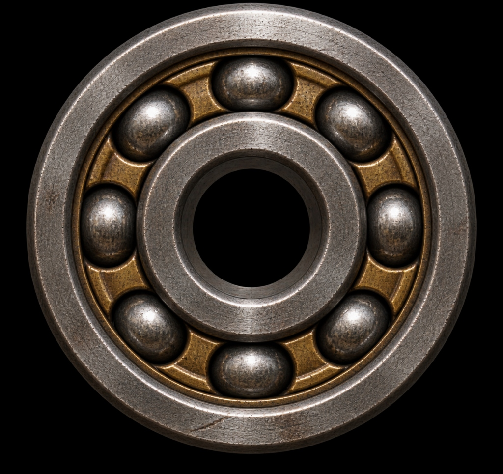

1. MATERI YANG SEDANG DIPELAJARI
TARGET: CP 1.1.3

Unit 1
Sel sebagai Unit Kehidupan
Mempelajari struktur mikroskopis, teori sel, dan dasar fungsi kehidupan pada tingkat sel.
Langkah: Baca Teori → Buat Resume → Uji Pemahaman
2. PROGRES PEMBELAJARAN IPA VIII
Unit Materi Terselesaikan
3 / 21 Unit
Kuis Chamber Tuntas (KKM 70)
2 Lulus
LKPD Praktik Terverifikasi Guru
1 Disetujui
3. TUGAS & PENILAIAN BERIKUTNYA
-
Tulis Resume PembelajaranKirim ringkasan untuk diverifikasi instruktur
-
Evaluasi Kuis ChamberMinimal 70 poin untuk membuka materi lanjut
-
Praktik Tim (LKPD Kelompok)Observasi & laporan bersama tim ilmiah